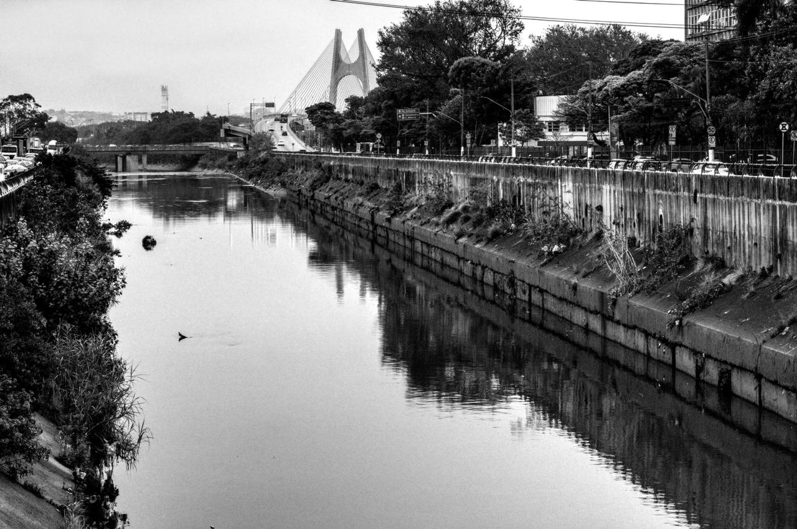
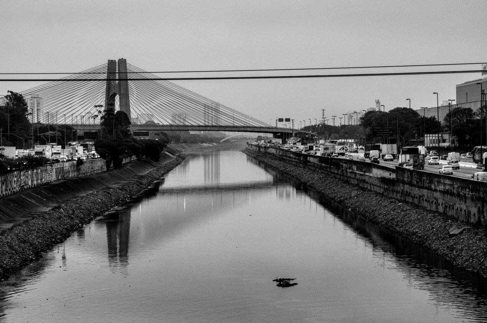
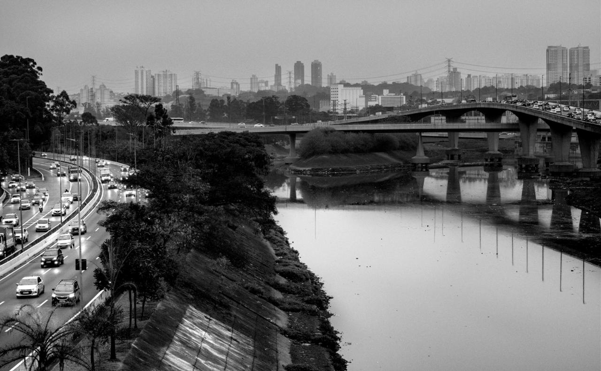
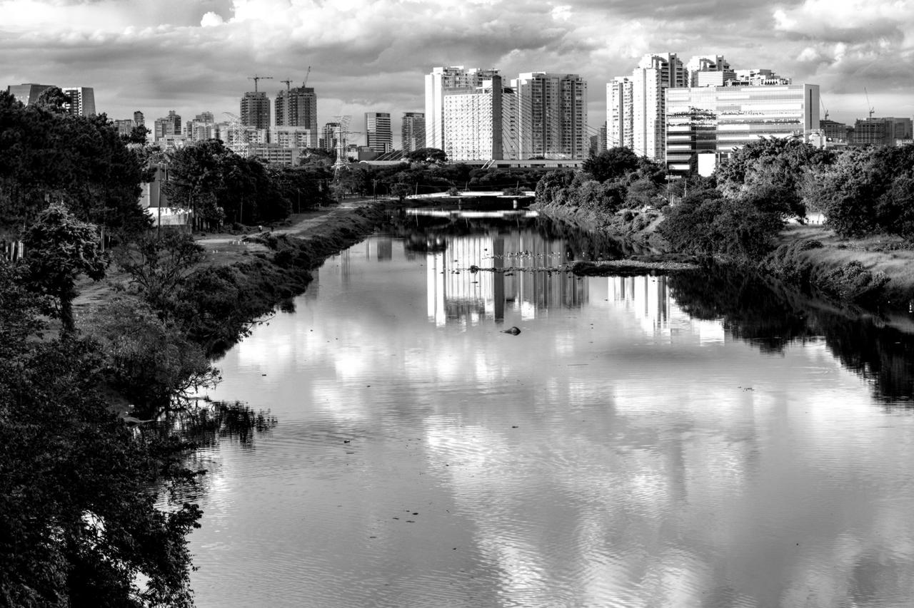
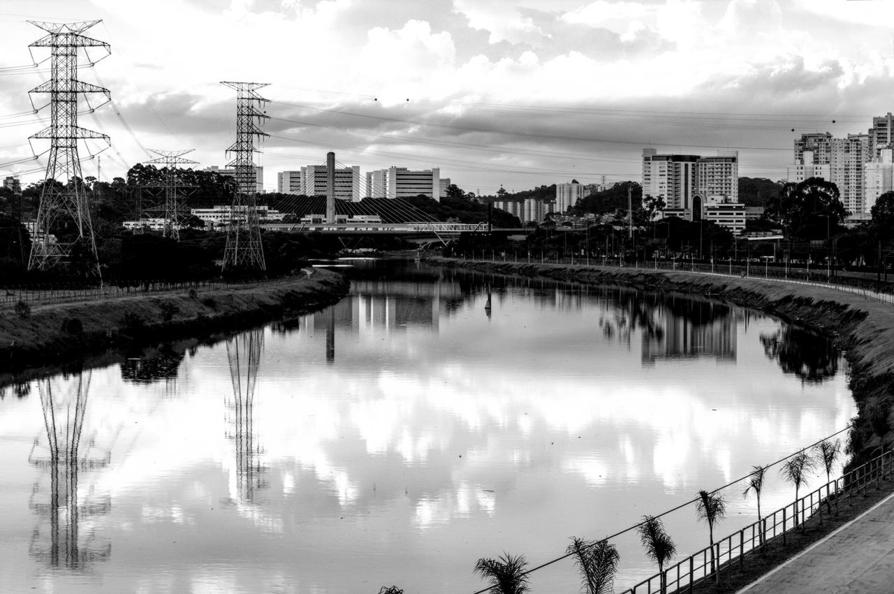
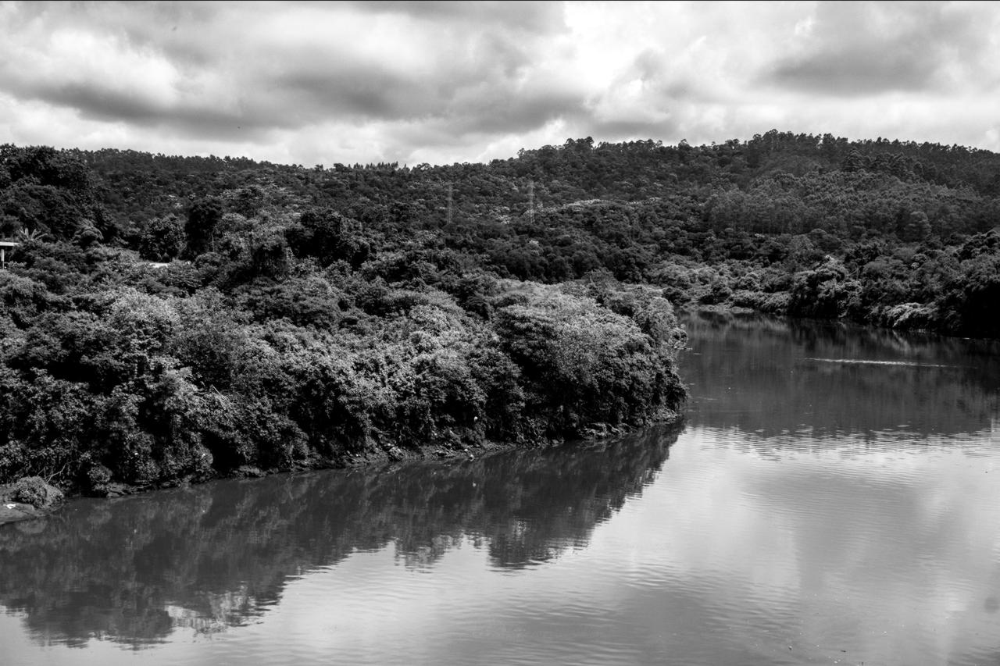
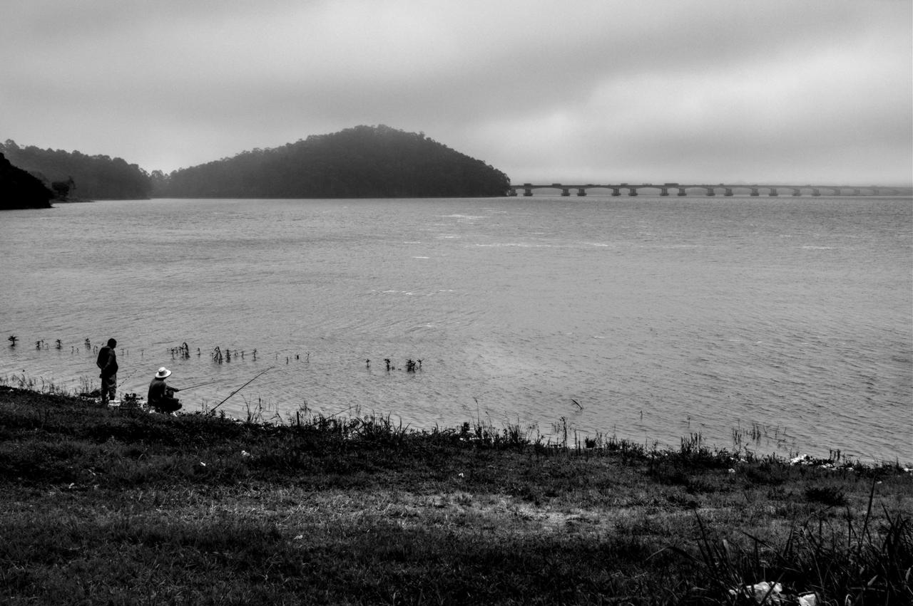
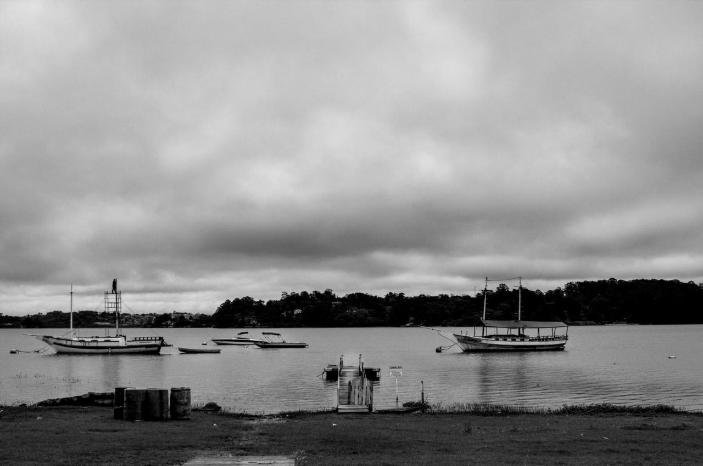
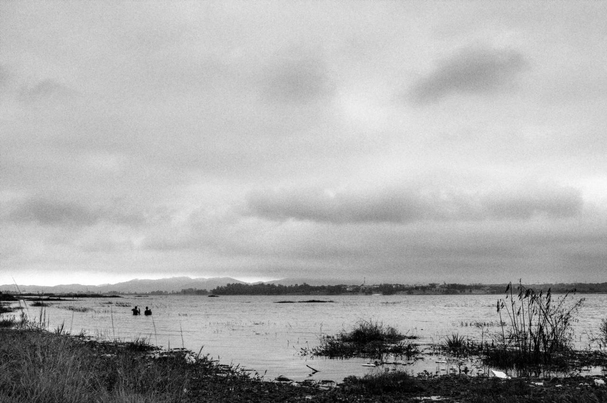

Silêncio dos rios que gritam

São Paulo é uma cidade anfíbia, construída entre rios e sobre rios. Entre valas de concreto, jazem aprisionados sem crime algum cometido. Quando vêm as torrentes tropicais, relembram à metrópole sua existência, ocupando as ruas e preenchendo o vazio deixado pelo deserto de asfalto. Num grito silencioso, anunciam sua presença, tão ignorada indiferente ruído dos motores.
Nas águas represadas para geração de energia, abastecimento e macrodrenagem, o povo hidro-carente encontra águas mais limpas e menos barreiras entre a água e a cidade, podendo se aproximar para nadar, pescar e navegar. Esse povo faz nos lagos artificiais das barragens o que sonha fazer nos rios, enquanto estes esperam o dia em que não serão mais abraçados por máquinas e autopistas, mas por gente. Aguardam em silêncio: no silêncio dos rios que gritam.
O "Silêncio dos Rios que Gritam" traz a diversidade dos corpos hídricos na metrópole de São Paulo nas áreas urbanas consolidadas e nas fronteiras de expansão. Documenta-se a degradação dos rios, enquanto são apresentados usos encontrados nas águas represadas, onde a população realiza a recreação que gostaria de ter nos rios, mas é impedida pelas condições sanitárias e barreiras urbanas que a impedem de aproximar-se da água.
A população, que antes dependia dos rios para recreação e trabalho, com seus banhos, viu-se impedida de aproximar-se das águas pelas barreiras impostas: ferrovias e rodovias dispostas na planície aluvionar, verdadeiras cicatrizes urbanas que separaram a cidade de quem lhes deu origem. Um povo carente do contato com a água não perde a oportunidade de se aproximar da água das represas metropolitanas; construídas para abastecimento, geração de energia e controle de cheias, as represas Billings, Guarapiranga, Taiaçupeba e Paiva Castro são as de maior área inundada e, dada sua proximidades aos núcleos urbanos, as mais acessíveis. Nesses locais, vemos que, nessa Atlântida afogada em concreto, a população realiza nos lagos artificiais o que gostaria de fazer nos rios, mas é impedida não só pelas condições sanitárias, mas pelas barreiras que a separam dos leitos.
Ainda que degradados, os corpos hídricos impõem sua presença na paisagem. Se emparedados, inundam, se enterrados, alagam e, se confrontados, resistem. Mais que repositórios de biodiversidade e garantia de abastecimento, os rios são também fontes de cultura, pertencimento e territorialidades. Uma cidade que dá as costas aos seus rios está dando as costas à sua própria história.








